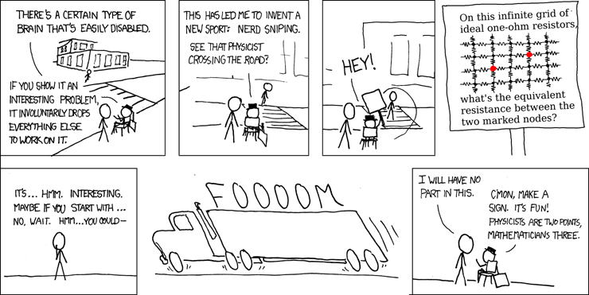
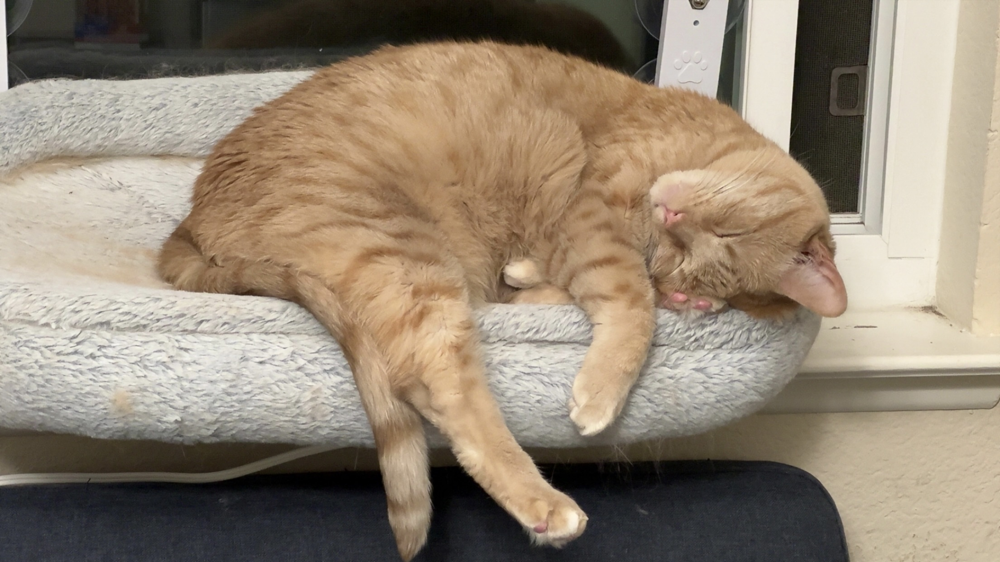
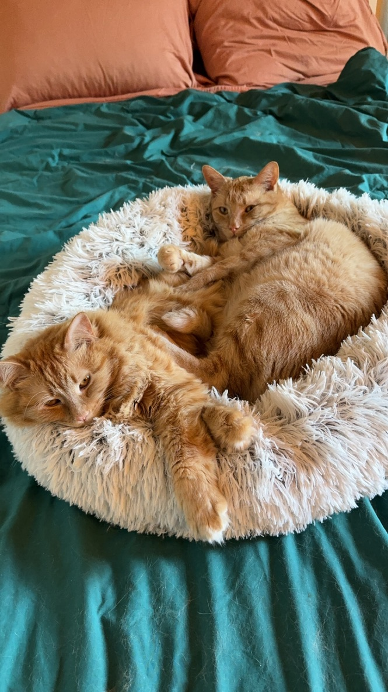
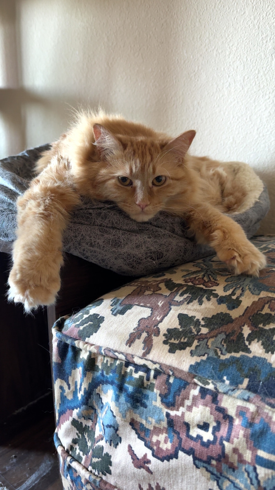
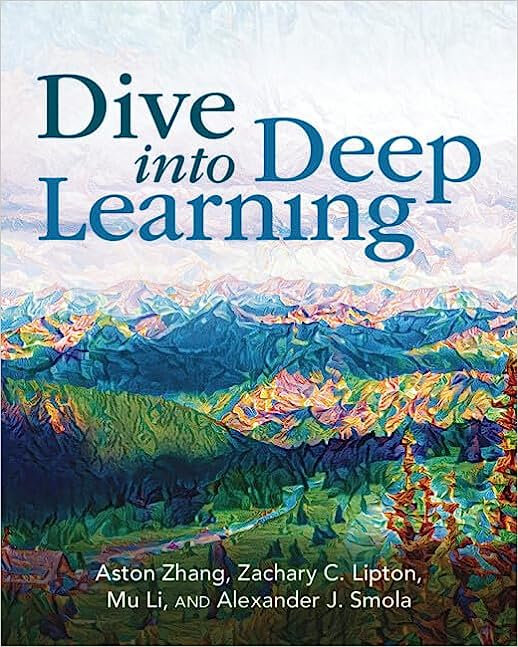
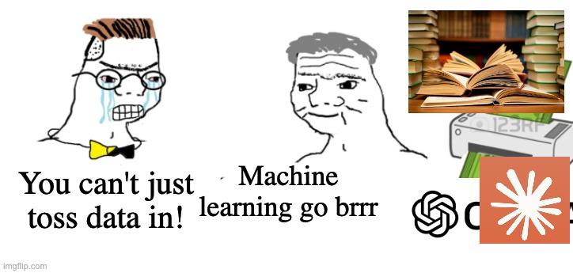

Advanced Machine Learning
SGDEnsemble MethodsDimensionality ReductionMLPsCNNsLLMsPyTorch to build, train, and deploy deep learning modelsI love getting asked questions
During class please raise your hand and I’ll get to you as soon as I can
If you’re confused then chances are that you’re not the only one

(Later on there will be a poll for times)




It’s goal is to walk from Linear Regression to Modern large-scale Deep Learning models
Lots of code examples, practice problems and material available for it
The goal is for most days to have a lecture, a break and a lab:
(but if you’ve ever had a class with me you know this is only a goal)
| Assignment Kind | Value |
|---|---|
| Homework | 36% |
| Exams | 36% |
| Final Project | 16% |
| Participation | 12% |
You must get a 60% overall, and 40% in each subset of these in order to pass
Attendance is expected and enforced through quizzes
My personal thoughts on LLMs can be summarized as:
One of the things are is most valuable about us is our ability to problem solve.
But we have to learn how and keep practicing it
How I expect you to use LLMs in this class:
How I expect you to not use LLMs in this class:
The point of you being in this class is to understand the topic, right?
What gets you a job is the ability to think and put pieces together.
If I ask you to explain your code or analysis, you should be able to do so.
Coding
Write code to understand functionality
Exploration & Analysis
Use the code to explore behavior
Write a report on parameters and findings
Peer Evaluation
Evaluate your peers’s work to help both of you improve communication in reports
Each phase will be 1 week, but phases 1 & 3 will be overlapped
The goal is to play around with a topic you find interesting that’s within the scope of the class
These study notes are for you to go back and use as a basis for studying
How to approach these notes:
But don’t trust LLMs entirely!
[fill in the blank] to write code for you
Give yourself time to solve problems
College has a lot going on, but starting early gives you time to step back
Sometimes we run into impossible problems and need to start over
Things to do
Things to not do
Give yourself time and space to let your mind wander and make random connections
This is one of the big traps with LLMs – they force you into doing rather than thinking.
This causes burnout and poor learning

Machine Learning works on feeding data into a model that we think fits the data
Critical things:
#| '!! shinylive warning !!': |
#| shinylive does not work in self-contained HTML documents.
#| Please set `embed-resources: false` in your metadata.
#| standalone: true
#| components: [viewer]
#| viewerHeight: 550
from shiny import App, render, ui
import matplotlib.pyplot as plt
import numpy as np
# Generate the observed dataset once using hidden parameters.
rng = np.random.default_rng(42)
true_slope = 3.2
true_intercept = 5.0
error_sd = 7.0
x = rng.uniform(0, 10, 50)
epsilon = rng.normal(0, error_sd, 50)
y_observed = true_slope * x + true_intercept + epsilon
app_ui = ui.page_fluid(
ui.layout_columns(
ui.card(
ui.card_header("Tune the model"),
ui.input_slider(
"slope",
"Slope (a)",
min=-5,
max=8,
value=0,
step=0.1
),
ui.input_slider(
"intercept",
"Intercept (b)",
min=-20,
max=30,
value=0,
step=0.5
),
ui.hr(),
ui.output_text("model_equation"),
ui.output_text("mse_score")
),
ui.card(
ui.output_plot("linear_plot")
),
col_widths=(4, 8)
)
)
def server(input, output, session):
@output
@render.text
def model_equation():
a = input.slope()
b = input.intercept()
return f"Model: ŷ = {a:.1f}x + {b:.1f}"
@output
@render.text
def mse_score():
a = input.slope()
b = input.intercept()
y_predicted = a * x + b
mse = np.mean((y_observed - y_predicted) ** 2)
return f"Mean squared error: {mse:.1f}"
@output
@render.plot
def linear_plot():
a = input.slope()
b = input.intercept()
y_predicted = a * x + b
x_line = np.linspace(0, 10, 200)
y_line = a * x_line + b
fig, ax = plt.subplots(figsize=(8, 5))
# Residuals: distance from each observation to the model.
ax.vlines(
x,
y_predicted,
y_observed,
color="gray",
alpha=0.25,
linewidth=1
)
# Fixed observed data.
ax.scatter(
x,
y_observed,
s=55,
alpha=0.8,
color="steelblue",
label="Observed data",
zorder=3
)
# Candidate model controlled by the sliders.
ax.plot(
x_line,
y_line,
linewidth=3,
color="firebrick",
label=fr"Model: $\hat{{y}}={a:.1f}x+{b:.1f}$"
)
ax.set(
xlim=(0, 10),
ylim=(-10, 45),
xlabel="x",
ylabel="y",
title="Fit the model to the observations"
)
ax.grid(alpha=0.2)
ax.legend(loc="upper left")
return fig
app = App(app_ui, server)Lab time!
CST463 · Advanced Machine Learning